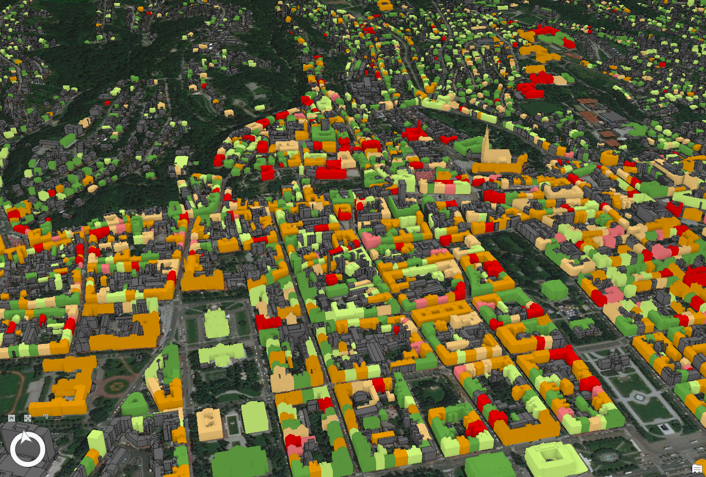

FragMENTS · Earthquake engineering
Understanding
historic masonry.
Research into how masonry buildings respond to earthquakes, from the contact between blocks to the behaviour of an entire structure.
Source: damage assessment database, CCEE
Research at HCPI / CCEE
Explore FragMENTS
A Croatian Science Foundation project based at the Croatian Centre for Earthquake Engineering (CCEE / HCPI), within the University of Zagreb, Faculty of Civil Engineering. Explore the methods, meet the researchers and access the tools as they become available.
Research
From masonry contacts to seismic fragility.
02Open Science
Code, applications, data and publications.
03Applications
A dedicated home for future research tools.